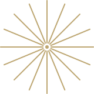

Everything you need to start using GraphQL
Apollo is an incrementally-adoptable data stack that manages the flow of data between clients and backends.
Based on GraphQL, it gives you a principled, unified, and scalable API for developing modern apps on top of services.


Test drive the Apollo client and server
The Apollo technical preview comes with an early version of everything you need to get started using GraphQL. Trying it out is simple: you can go component by component, client by client, all without touching a line of your backend code.